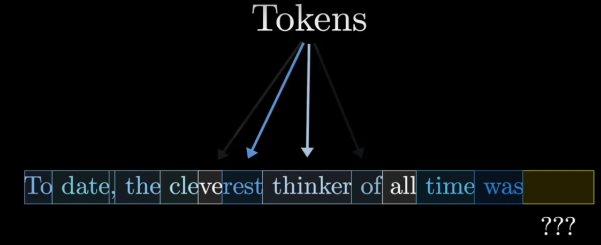
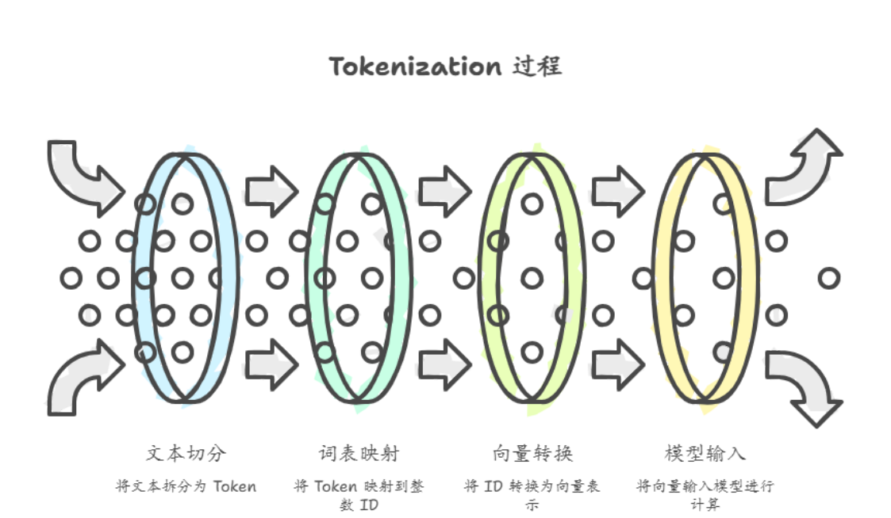
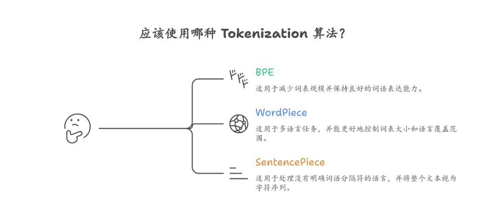

Token 与 Tokenization
在大语言模型的工作过程中，模型并不会直接处理完整的单词或句子，而是将文本拆分成更小的单位 进行计算，这些最基本的文本单位被称为 Token。Token 可以理解为模型处理语言的最小单位，它既 可能是一个完整的单词，也可能是单词的一部分，甚至可能是一个字符或标点符号。例如在英文句子 中，一个常见的词语可能会被拆分为多个 Token，而在中文文本中，一个汉字往往对应一个 Token。

Token 的存在是因为神经网络只能处理数字形式的数据，因此文本在进入模型之前需要经过一个转换 过程。这个过程首先会将文本切分成若干 Token，然后再通过词表（Vocabulary）将每个 Token 映射 为一个整数 ID。随后，这些 Token ID 会被进一步转换为向量表示（Embedding），并输入到模型中 进行计算。因此，Tokenization 可以理解为连接自然语言与神经网络计算之间的桥梁。

在实际应用中，不同的大语言模型会采用不同的 Tokenization 算法，其中最常见的三种方法是 BPE、 WordPiece 和 SentencePiece。这些算法的目标都是在词语粒度和字符粒度之间找到一个平衡，从而 既能够有效表示常见词汇，又能处理未见过的新词。
BPE（Byte Pair Encoding）是一种较早被广泛使用的子词分割算法，其基本思想是通过不断合并文本 中最常见的字符对，逐渐形成更长的子词单位。最初，文本会被拆分为单个字符，然后统计哪些字符 组合最频繁出现，并将这些组合合并为新的 Token。经过多次迭代后，就可以形成一个稳定的子词词 表。这种方法能够有效减少词表规模，同时保持较好的词语表达能力。
WordPiece 与 BPE 的思路类似，也是一种基于子词的分词算法，但它在合并子词时使用概率模型来选 择最优的组合。WordPiece 最早被应用在搜索引擎和语言模型中，例如早期的一些预训练模型就采用 了这种分词方式。由于其能够更好地控制词表大小和语言覆盖范围，因此在多语言任务中具有一定优 势。
SentencePiece 则是一种更加通用的分词方法，它不依赖于传统的空格或词语边界，而是直接在原始 文本上进行建模。SentencePiece 将整个文本视为一个连续的字符序列，然后通过统计学习方法自动 生成子词词表。这种方式在处理中文、日文等没有明确词语分隔符的语言时尤其有效，因此许多现代 大语言模型都会采用类似的方法进行 Tokenization。

Tokenization 不仅影响模型的语言表达方式，还直接影响系统的运行成本。在大多数大模型 API 或推 理服务中，费用通常是按照 Token 数量进行计算的，因此输入文本越长，生成的输出越多，消耗的 Token 数量就越大，从而导致计算成本增加。此外，Token 数量还会影响推理速度，因为模型在生成 每一个 Token 时都需要进行一次完整的前向计算。如果输入文本被拆分为更多 Token，那么模型的计 算量也会相应增加。
Token 的数量还与模型的 上下文长度（Context Window） 密切相关。上下文窗口指的是模型在一次 推理过程中能够同时处理的最大 Token 数量。例如，如果一个模型的上下文窗口为 8000 Token，那么 输入文本和模型生成的输出 Token 总数必须在这个范围之内。当对话历史或输入文档过长时，就可能 超过上下文限制，从而导致部分信息被截断或需要额外的压缩处理。 因此，在实际系统设计中，开发者通常需要通过合理的文本切分和上下文管理策略来控制 Token 使 用。例如，在构建检索增强生成系统时，长文档往往会被切分为多个较小的文本块，以便在保证语义 完整性的同时减少 Token 消耗。同时，在多轮对话系统中，也需要对历史消息进行摘要或筛选，以避 免上下文窗口被过多的历史信息占用。
总体来看，Token 与 Tokenization 是理解大语言模型工作机制的重要基础。Token 决定了模型如何表 示和处理文本，而 Tokenization 算法则决定了文本被拆分的方式。它们不仅影响模型的语言理解能 力，还直接关系到系统的运行效率、推理速度以及整体成本，因此在构建大模型应用时必须认真考虑 这一部分的设计。